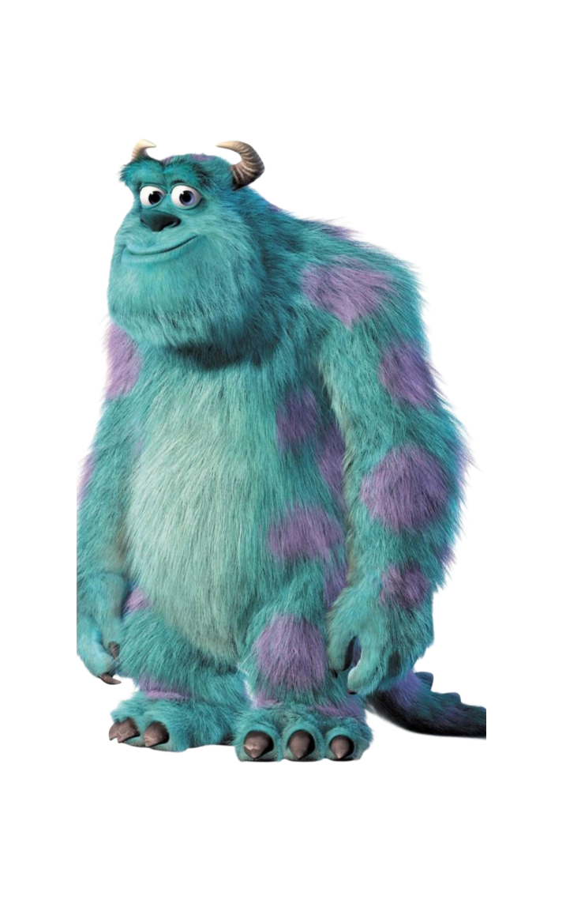
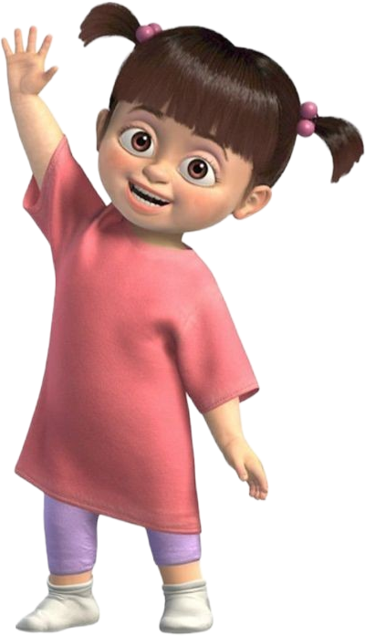

🤍
Happy Birthday
Zohreh
برای جوجهی من...


برای جوجهی من...

تولدت مبارک، جوجهی من... 🤍🎂
نمیدونم این پیام رو از کجا شروع کنم...
فقط میدونم امروز، روز تولد توئه و دلم نمیخواست مثل بقیه فقط بنویسم «تولدت مبارک». چون تو برای من، فقط یه تبریک ساده نیستی.
جوجه...
۳۰ سال پیش، یه دختر به دنیا اومد که خودش خبر نداشت یه روزی قراره اینقدر برای یه نفر عزیز باشه. شاید خودتم ندونی، ولی از وقتی وارد زندگیم شدی، خیلی از روزهای معمولی من، دیگه معمولی نبودن.
هنوز اون روز بارونی رو خوب یادمه...
بعد از اینکه کارمون تموم شد، رفتیم همون پارک نزدیک محل کارمون. هوا آرومآروم بارون میزد. نه رستوران لوکسی بود، نه جای خاصی... فقط یه پارک ساده، صدای بارون و دو نفر که ساعتها کنار هم حرف میزدن.
تو خجالت میکشیدی...
گاهی فقط لبخند میزدی...
و من همون موقع با خودم گفتم:
«چه حس قشنگی داره کنار این دختر بودن...»
شاید اون روز هیچکدوممون فکر نمیکردیم یه خاطرهی به این سادگی، اینقدر برای من موندگار بشه.
بعدش اولین آهنگی که با هم گوش دادیم، «با تو» بود...
نمیدونی از اون روز تا الان، هر بار اتفاقی اون آهنگ پخش میشه، قبل از اینکه به خواننده یا شعرش فکر کنم، یاد تو میافتم. انگار اون آهنگ برای من دیگه فقط یه آهنگ نیست؛ یه تکه از خاطرههای ماست.
جوجه...
یه چیزی رو هیچوقت بهت نگفتم.
من همیشه وقتی بهت نگاه میکنم، اول چشمات رو میبینم. نمیدونم توی اون نگاه چی هست، ولی یه آرامشی داره که هیچوقت ازش خسته نمیشم.
بعد گونههات...
همون گونههایی که وقتی میخندی، انگار دنیا هم باهات لبخند میزنه.
و قد کوچولوت...
نمیدونم چرا، ولی باعث میشه همیشه دلم بخواد بیشتر مراقبت باشم.
امروز که وارد ۳۰ سالگی میشی، فقط یه آرزو دارم...
آرزو میکنم همیشه همون دختری بمونی که با خندههاش حال آدمهای دور و برش رو خوب میکنه.
آرزو میکنم هیچوقت غم، جای خودش رو توی دلت پیدا نکنه.
آرزو میکنم هر وقت به آینه نگاه میکنی، همون دختری رو ببینی که من میبینم؛ دختری که ارزش دوست داشته شدنش خیلی بیشتر از چیزیه که خودش فکر میکنه.
و حالا مهمترین چیزی که میخوام بهت بگم...
مرسی که هستی.
مرسی که باعث شدی یه پارک ساده، یه روز بارونی، یه آهنگ و حتی یه روز کاری، برای من تبدیل به خاطرههایی بشن که هر وقت یادشون میافتم، بیاختیار لبخند میزنم.
اگر یه روز ازم بپرسن قشنگترین چیزی که این مدت نصیبم شده چی بوده...
اسم هیچ جا، هیچ وسیله و هیچ اتفاقی رو نمیارم...
از آشنایی با تو میگم.
جوجه...
شاید همیشه نتونم بهترین هدیهها رو برات بگیرم...
شاید همیشه نتونم بهترین جملهها رو پیدا کنم...
اما یه چیز رو مطمئنم...
تا وقتی کنارمی، هر کاری از دستم بربیاد انجام میدم تا دلیل لبخندت باشم، نه اشکت.
تولدت مبارک، زهرهی عزیزم...
امیدوارم سالها بعد، هر وقت اتفاقی این پیام رو دوباره خوندی، همون لبخندی روی لبت بشینه که امروز موقع خوندنش نشسته.
و یادت بیاد یه نفر، یه روزی این کلمهها رو نه از روی عادت، نه برای قشنگ نوشتن، بلکه از ته دلش برای تو نوشت.
تولدت مبارک، جوجهی من... 🤍
❤️ دوستت دارم؛ برای خودِ خودت... برای قلب مهربونت، برای خندههات، برای خجالت کشیدنت، برای چشمات و برای تمام چیزهایی که باعث شدن «زهره»، زهره باشه.
Made with Love 💜